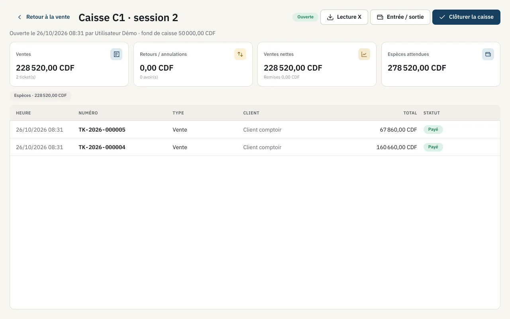
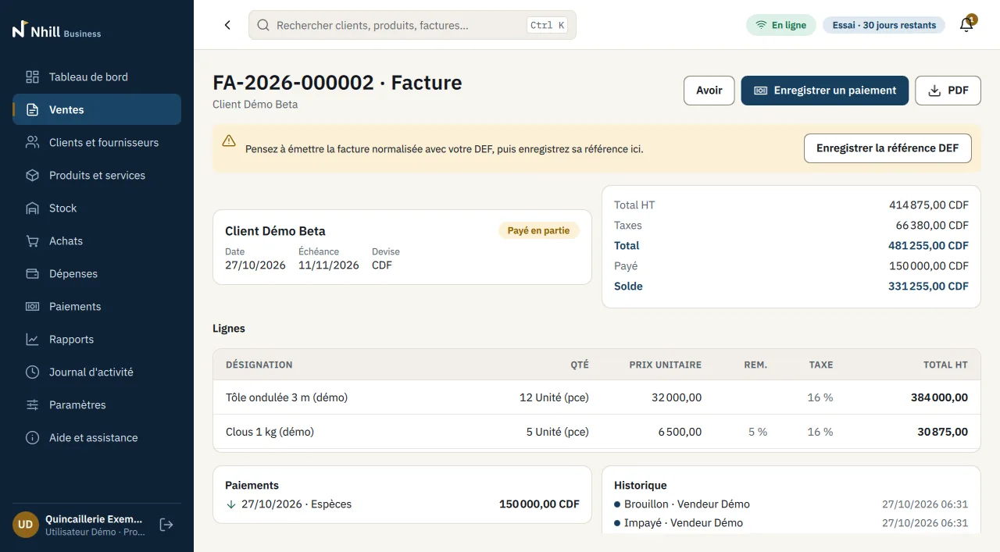
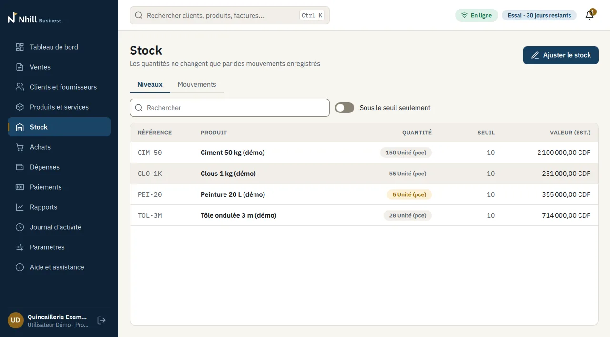
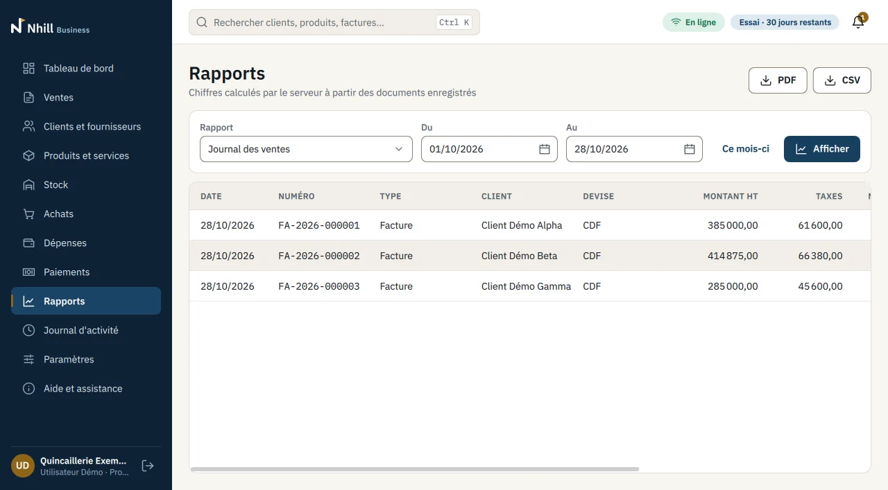
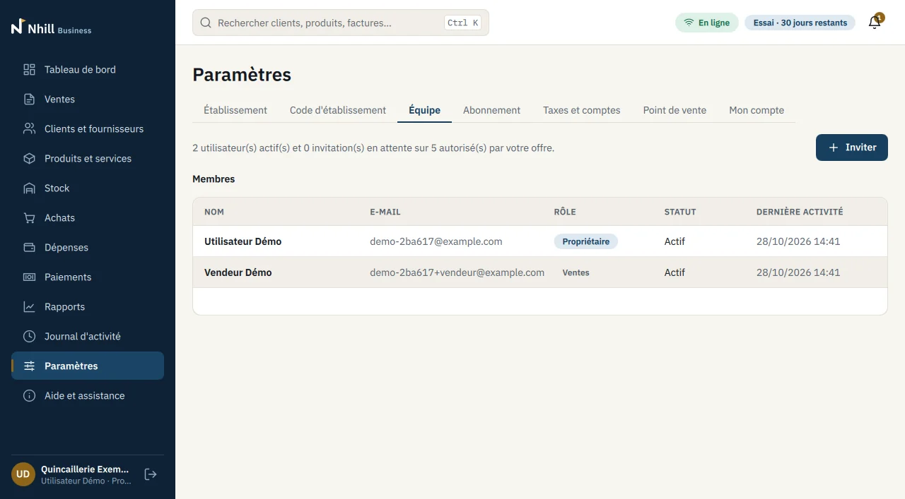
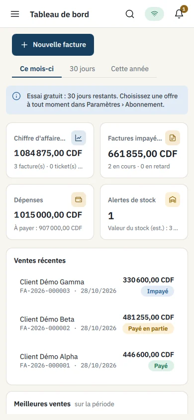

Everything you need to sell, follow and decide
Nhill brings together the till, invoices, stock, payments and reports. Here is what each part does for you, with screenshots of the real application.
Take payments fast, close the till right
Nhill POS is made for the counter: few steps per sale, and a closing based on figures.
- Each cashier signs in with their own account and only sees their register and session.
- Opening with a float; sell by touch or with a USB barcode scanner.
- Several payment methods on one ticket (cash, card, Mobile Money) and change computed for you.
- Discount above the limit, return or void: approval by a supervisor with their own password, valid once.
- Cash in and cash out with a reason, X reading during the day.
- Closing: the cashier counts the drawer without seeing the expected amount; Nhill computes the variance and keeps it in the Z report.
- PDF tickets in 58 or 80 mm roll format; keyboard shortcuts F2 (scan) and F9 (pay).

Clean invoices, credit under control
Your documents go out in your name, and every customer has an up-to-date balance.
- Quotes, purchase orders, invoices and credit notes, numbered by the server with no gaps or duplicates.
- A quote becomes an invoice in one click; a credit note corrects an invoice and puts goods back in stock.
- Discounts and taxes per line (DRC profile: 16 % VAT, 0 %, exempt), exact calculations.
- Documents in CDF, USD, EUR or another currency, with the exchange rate saved.
- PDF with your logo and legal details, in French or English.
- Partial payments attached to the right invoice; a list of what each customer owes you, per currency.
- For VAT-registered businesses: a field keeps the reference of the standardised invoice issued by your fiscal device.

Accurate stock without constant counting
Quantities only change through recorded movements: you always know why a figure moved.
- Products and services, references, barcodes, categories, sale and purchase prices.
- Stock per warehouse and transfers between warehouses.
- Tracked movements: sale, received purchase, adjustment with a reason, return.
- Alerts for products below their threshold, estimated stock value.
- Catalogue import and export as CSV to get started quickly.
- Supplier purchases: receiving goods updates stock and keeps the amount left to pay.

Figures ready for you and your accountant
Reports are computed by the server from the recorded documents: everyone reads the same figures.
- Sales journal, payments, expenses, sales per product with estimated margin.
- Stock movements, customer receivables, amounts owed to suppliers.
- Expenses per category with their receipts (photo or PDF).
- Cash and bank accounts; payments received and made.
- PDF and CSV export of every report.

A team, roles and a log
Everyone works with their own access; you stay in charge of who does what.
- Roles: owner, administrator, manager, sales, accountant, read-only, cash manager, cashier.
- Employees join the business with the establishment code and an invitation; the code is renewed every 30 days.
- Activity log: who did what and when, tamper-proof, exportable.
- Forgotten password: the administrator gives the employee a temporary password, replaced at the next sign-in; owners and administrators receive a code by e-mail.
- One person can work for several establishments, with separate access for each.

On your computers and phones
- Nhill Business: Windows 10 and 11 (64-bit), Linux (Debian 13, Ubuntu 24.04), Android 7 and later phones and tablets.
- Nhill POS: Windows 10 and 11 (64-bit), Linux, with a USB barcode scanner if you like.
- Interface, documents and reports in French or English, chosen by each user.
- An internet connection, even mobile, is enough: an operation cut by a network drop is sent again without being counted twice.

Nhill fits the way you work
With your accountant, your customers and the payment methods you already use, from the first day.
- With your accountantSales, payment and expense journals, customer receivables and amounts to pay: everything exports to CSV and PDF, ready to hand over.
- With your tax obligationsYour tax rates and legal identifiers appear on every document. If your country requires a fiscal device or approved invoicing, Nhill keeps the reference of each official document; a detailed profile is ready for the DRC.
- With all your payment methodsCash, card, bank transfer, cheque, Mobile Money: each payment is recorded with its reference and shows up in your reports, method by method.
- With your customersInvoices, quotes and tickets as PDF, in your name, to send by e-mail or messaging app from your computer or phone.
- Wherever you areYour data is saved in real time on a secure server; a mobile connection is enough to sell, invoice and follow your business.